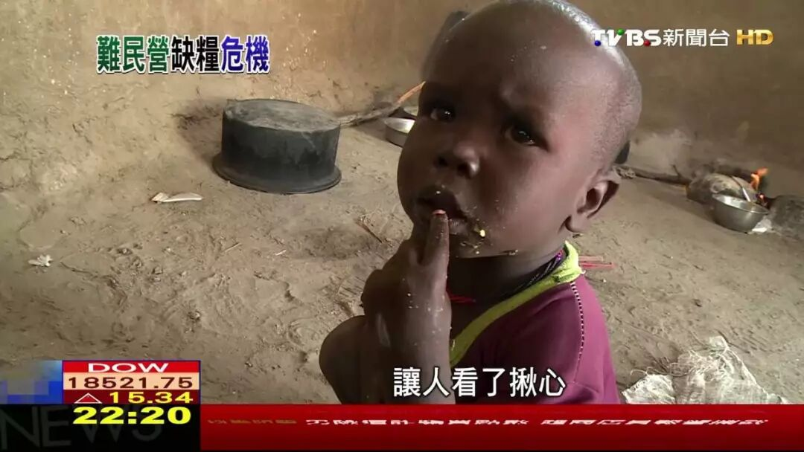
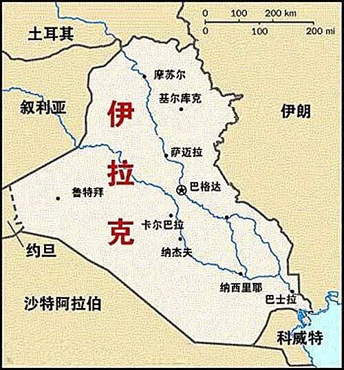
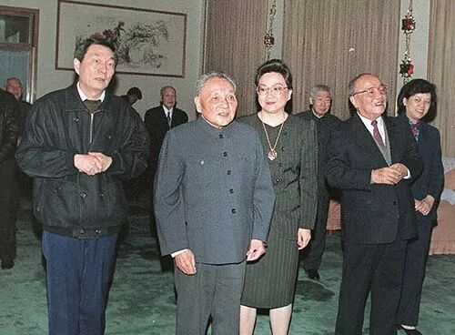

不知道读者会不会常常有这样的疑惑，慈善机构的援助真的有用吗？我的捐款真的能帮助到别人吗？为什么一个国家会愿意给另外一个国家贷款和援助呢？难道每个国家真的都有那么多人道主义精神，愿意把从老百姓身上收来的税钱拿去送给国际友人吗？读完独裁者手册的第七章以后，我对于这个问题有了更加深刻的理解。
援助到底有用吗？
我们一定都看到过慈善机构挂出的那些饥饿儿童的令人充满同情心的照片。慈善机构常常会这么算一笔账，每喂饱一个儿童需要花费多少多少钱，因此要是你捐助出多少钱，你就能喂饱多少多少人。然而这样的募捐年复一年，捐助出去的钱真的奏效了吗？

在现代，粮食的生产早已非常发达，就算欠发达国家的生产力非常落后，也很难想象居然有那么多的人依然饱受饥荒之苦。我们知道每年的国际援助远远超过喂饱这些人所需要的钱，然而最基本的饥荒问题一直以来还是没有被解决，到底是为什么呢？
让我们来复习一下之前书里第一章的内容：要做好一个独裁者，只需要好好地照顾自己的核心支持者的利益就可以了，除此以外所有人的利益都完全不用考虑。当一个独裁国家得到外国援助的时候，一定会从中抽取大量的利益，以便支付给其核心支持者。
这样的例子有很多。书中举了埃塞俄比亚政府的例子：当地政府面对国际援助，表示要征收大量的关税。不仅如此，政府还把用于运送援助物资的卡车用于把人口运送到集体农场，强制人们进行劳作，造成了更多人的死亡。
有人会说，是啊，确实是会有很多抽成，但是抽成总归会有一部分剩下来起作用的嘛。这确实没错，有一部分的钱确实帮助到了一部分的人。然而这样真的是好的吗？
我们知道慈善组织的援助通常提供的都是最基本的公共服务，比如基础的粮食，医疗保健，以及教育服务等等。而这些恰恰是连最独裁最腐败的领导人都想要给人们提供的服务。为什么呢？因为有了基础的公共服务以后，人们才会有生产力，才能产出更多的东西，政府才能征收到更多的税。如果腐败的政府意识到有人在帮他提供对应的公共服务，他并不会在这些公共服务的基础上锦上添花。正相反，这样他就有机会可以把这部分提供公共服务的资金挪为他用。
常常发生的情况是，非政府组织提供了援助，比如为某个村子100个孩子提供了基础教育，看上去是一件好事。然而可能政府本来就准备为每个孩子提供基础教育，有了外来援助以后，政府就省下了这部分钱。政府省下了这部分钱以后，就可以用这些钱进一步巩固自己的权利，从而更加久地折磨人民。
我们知道很多的非政府组织确实是出于善意去做出这些援助行为的，就算这样的援助收效甚微，似乎也好过没有。那从政府层面，难道也有那么多的善意吗？
政府为什么要对外援助？
美国在2001年至2008年为巴基斯坦提供了66亿美元的军事援助以打击塔利班。据估计仅有5亿美元到了巴军方手上。很难相信美国政府居然会不知道他们的援助被大量挪用了，其实他们这么做是为了实现另一个目标：增进美国外交策略的利益。
有大量的援助给到了这些腐败的受援国政府，其实恰恰是有意为之。援助之所以要给这些盗用资金的政府，是因为只有这样的政府才会出卖本国人民的利益以换取自己的政治安全。从援助国的角度来看，它给出援助的同时换取了受援国的支持，从而反过来提升了援助国选民的福利。
不同种类的政府被收买的价格是不太一样的，对于相对更独裁的政府来说，它需要收买的核心支持者更少，因此收买的价格相对较低。而对于相对更民主的政府来说，它需要收买的核心支持者很多，因此要让他改变本国政策，出卖本国人民利益，对应的价码就高得多。
2003年美国入侵伊拉克之前，曾经尝试收买土耳其，以便让其同意在土耳其大规模部署美国地面部队。这个提议在土耳其本土非常不得人心，因为土耳其毕竟是一个穆斯林国家，而这个提议则让他帮助一个基督教国家去侵略一个穆斯林兄弟国家。美国为了收买土耳其政府，提出给予土耳其60亿赠款和200亿贷款。然而土耳其是一个相对民主的国家，如果把这些钱平均分配给四分之一的选民，大约相当于每人1500美金，显然不太够（就好比给你一万块，问你愿不愿答应帮助美国，在东北部署军队攻打朝鲜）。

要是土耳其是一个相对更加独裁的国家，比如只有1%的核心支持者，则每个核心支持者可以分到4万美金，这就是一笔相当可观的收入了，会对很多人产生巨大的吸引力。后来美国从科威特（一个君主制国家）出兵攻打伊拉克，大概不是一个偶然。
后记
我经常看到网上有人骂中国政府为什么老是给非洲的各种小国送钱，还给他们很多很多优惠政策，却不管国内百姓的疾苦。《独裁者手册》的这一章解答了我不少的疑惑。
另外一个蛮有感触的点：这本书的第7章之前讲了很多民主国家的好处，独裁国家的坏处，要是我是一个民主国家的人民，也许会因此深深地认同民主一定比集权要更好。然而不管是新加坡的李光耀，还是中国的伟大领导人，都是在掌握了权力以后，在分配给核心支持者足够的利益，稳固了政权以后，愿意把多出来的利益贡献给人民的人，并不太符合书中的观点。
在看到了民主国家种种的问题以后，不得不说集权的方式也有其可取之处。书中一直强调选票才能最终保证政府忠于人民的利益，不过民主的问题是政府的行为常常屈从于人下意识的欲望以及短视的本能。一个集权的政府虽然会有更多腐化的可能性，然而其对于长治久安的渴望也能激励其忠于更长远的国家以及人民的利益，可以说各有利弊吧。
